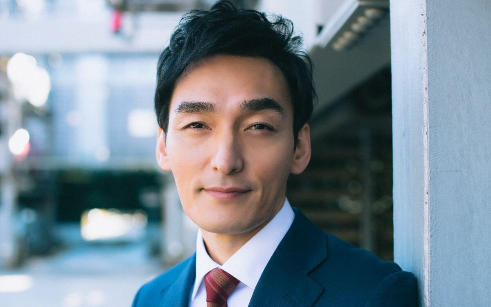

草彅剛とは？俳優としての魅力・音楽活動・人柄まで徹底解説
投稿日：2025年6月14日

元SMAPで新しい地図の草彅剛（くさなぎ つよし）さん。俳優としての圧倒的な表現力や、人間味あふれるキャラクターで、幅広い世代から支持を集めています。本記事では、彼の活動の歩み・代表作・素顔までを詳しく紹介します。
🎬 俳優としてのキャリアと代表作
草彅剛さんは、ドラマ・映画・舞台など多様なジャンルで活躍。特に近年では実力派俳優としての評価が高まっています。
- 僕シリーズ（2003年〜2006年）— 繊細な感情を丁寧に演じ、多くの視聴者を感動させました。
- 任侠ヘルパー(2009年) — 任侠の世界に生きる男が介護の現場で奮闘し、人と向き合う姿を描いたヒューマンドラマ。
- 戦争シリーズ（2015年〜2023年）— 金や権力、感情に翻弄される人間模様を描いた社会派ドラマ。
- 映画『ミッドナイトスワン』（2020年）— トランスジェンダーの役を熱演。第44回日本アカデミー賞 最優秀主演男優賞を受賞。
彼の演技は「無理のない自然体」でありながら、「深い余韻を残す」と多くの監督や共演者からも絶賛されています。
🎶 音楽の活動
SMAP時代はもちろん、「新しい地図」でも音楽活動を継続中。
- 『雨あがりのステップ』『星のファンファーレ』など、新しい地図名義でリリースした楽曲に参加。
- ライブイベント『NAKAMA to MEETING』ではファンの前で生歌を披露。
😊 草彅剛の人柄とファンとの関係性
一見クールに見える草彅さんですが、内面はとても誠実であたたかい性格として知られています。
- ファンを「仲間」と呼び、ライブやSNSで真摯に交流。
- YouTubeチャンネル「ユーチューバー 草彅」では手作り感満載の動画で素の姿を発信。
- 愛犬「くるみちゃん」への愛情もファンの間で有名。
🌟 今後の注目ポイント
俳優としての次回作や、新しい地図での音楽活動、個人YouTubeなど、これからの草彅剛さんにも注目が集まります。
年齢を重ねても柔らかく変化し続けるその姿は、多くの人のロールモデルとなりつつあります。
📝 まとめ
草彅剛さんは、俳優・アーティストとしてだけでなく、人間としても非常に魅力的な人物です。これからも彼の「進化」は見逃せません。
▼関連リンク
▶ 新しい地図 公式サイト